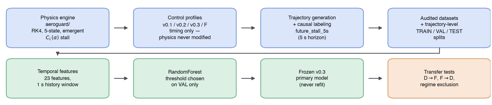
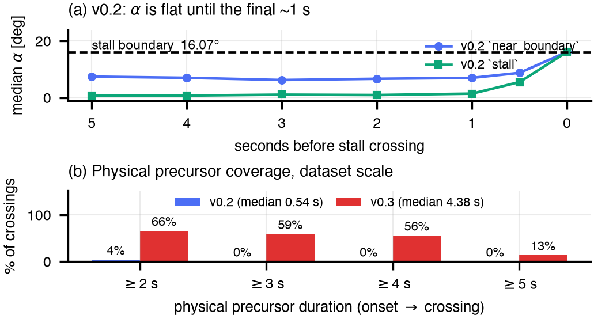
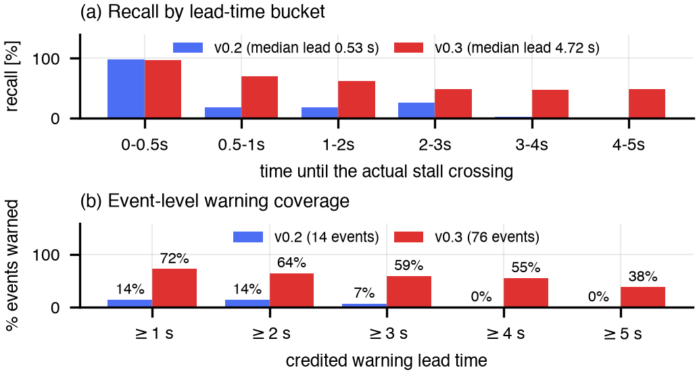
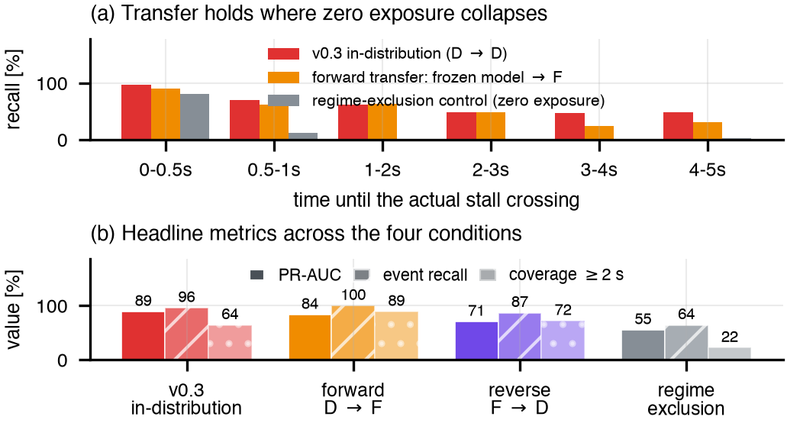

Abstract — Aerodynamic stall is preceded in principle by a measurable approach to the critical angle of attack, but whether that approach leaves a learnable, multi-second signature depends on how the aircraft is flown into it. We investigate this inside a self-contained simulation study: a 2-D longitudinal point-mass flight-dynamics model with an emergent, smooth CL(α) stall, three generations of synthetic trajectory datasets, and a temporal machine-learning early-warning model. The first evaluated dataset generation (v0.2; 1,000 trajectories, 1,753,615 rows) gave a median physical precursor — the direction-aligned transit from α = 8° to the 16.07° stall boundary — of only 0.54 s, and a model trained on it behaved accordingly: 100% event recall but a 0.53 s median credited lead time, with no event warned ≥4 s ahead. A physics diagnosis attributed the short precursor to control-input timing rather than to the dynamics. Leaving the physics engine untouched and re-timing only the elevator profile produced v0.3 (3,150 trajectories, 5,340,865 rows), median physical precursor 4.38 s; the same frozen model family then reached PR-AUC 0.890, 96.1% event recall and a 4.72 s median lead. A zero-exposure regime-exclusion control collapsed to PR-AUC 0.552 and 0.73 s median lead, so we tested transfer to a structurally distinct single-pulse mechanism: the frozen model retained PR-AUC 0.835 with 100% event recall (46/46) and a 2.96 s median lead. The evidence supports family-level generalization across control-input mechanisms producing the same slow approach to the boundary — not universal zero-shot stall prediction, and not a claim about any real aircraft.
Index terms — flight dynamics, aerodynamic stall, early warning, time-series classification, generalization, simulation.

outputs/final/figures/01_aeroguard_pipeline.png — same stages, same flow [A1].Aerodynamic stall occurs when the angle of attack α exceeds the value at which the lift coefficient peaks, after which lift falls with further increases in α [1]. Operationally the hazard is not the stall itself but how little time separates a recoverable state from an unrecoverable one. Conventional stall-warning devices are by construction imminent-event detectors: they fire when a measured quantity crosses a fixed margin ahead of the critical angle [10]. A system that instead recognised the multi-second approach would sit closer to the early-warning-signal literature on slow approaches to critical transitions [2] than to threshold alarms.
Whether such a system is learnable is contingent on a fact that is easy to overlook: the precursor must exist in the data before a model can learn it. A trajectory commanded abruptly through the boundary carries no multi-second signature, whatever model is applied — and that contingency became this investigation's central finding rather than a preliminary detail.
We ask two questions. First: can a physics-based flight simulator produce trajectories with a genuine, multi-second precursor to aerodynamic stall, and — if so — can a machine-learning model learn to detect that precursor early enough to constitute a useful early-warning system, rather than an imminent-event detector reacting inside the final half-second before the event? Second, reachable only once the first is answered affirmatively: is the learned skill a transferable understanding of rising α with shrinking stall margin over several seconds, or a memorized fingerprint of one control-input shape?
The contributions are a pipeline that measures the physical precursor duration directly rather than assuming it; a diagnosis attributing an early dataset's sub-second precursor to control-profile timing rather than to the dynamics, with an intervention that changed only the control input; and a two-direction transfer test that separates family-level generalization from the zero-shot claim the headline numbers might otherwise invite. All of it is simulation-internal: no real flight, wind-tunnel or validated-airframe data was used, and no claim about real aircraft is made or implied.
The simulator (aeroguard/) integrates a 2-D longitudinal point-mass model with the five-element state x = [V, γ, θ, h, q] — airspeed, flight-path angle, pitch angle, altitude, pitch rate — by fixed-step fourth-order Runge–Kutta at Δt = 0.01 s over a 20 s horizon. Angle of attack is derived, not stored: α = θ − γ. The equations of motion take the standard longitudinal form [3], [4]:
Equation (4) is a linear short-period surrogate for the pitching-moment equation, not a full aerodynamic moment model: the elevator has authority over pitch rate, damped by q and weakly restored by α. Drag follows the polar CD = CD0 + k CL2; thrust is linear in throttle.
Stall is emergent, not rule-based. The lift coefficient is a sigmoid blend — the technique standard for small fixed-wing UAV models [5] — between a linear pre-stall curve CL = CL0 + CLα α and a post-stall branch decaying exponentially from that curve's value at αstall; no if alpha > threshold branch exists anywhere in the aerodynamics module. The stall boundary used for labeling is therefore not a hand-set constant but the numerically located argmax of the live CL(α) function, α* ≈ 16.07°. Air density is constant at sea level (ρ = 1.225 kg m−3), as is mass; the coefficients (m = 1200 kg, S = 16.2 m², Iyy = 1285 kg m²) are plausible defaults for a generic small fixed-wing aircraft, not values measured or fitted for any real airframe. Critically for what follows, the physics engine was frozen after Stage 1 and never modified again.
Each dataset version simulates trajectories under randomized initial conditions and regime-specific elevator/throttle profiles. v0.2 comprises 1,000 trajectories (500 normal, 250 stall, 250 near_boundary; 1,753,615 rows; 19.2% crossing the boundary); v0.3 comprises 3,150 (500 normal, 250 stall, 2,400 gradual_approach_v3; 5,340,865 rows; 470 crossings), the last count sized from the Wilson 95% lower bound on the calibrated crossing rate so as to guarantee at least v0.2's crossing count.
Per-timestep features are the state and controls, causal one-step derivatives, and stall_margin = α* − α. The target is future_stall_5s: 1 if |α| exceeds α* anywhere in the half-open window (t, t + 5 s], 0 if not, undefined where that window is incomplete — strictly causal, never inspecting the current row. Splitting is at the trajectory level with verified zero trajectory-ID overlap across train, validation and test, and integrity audits (no NaN/Inf, no duplicate IDs, monotonic timestamps, causal-derivative re-derivation, no sub-zero altitudes) passed at every version.
The primary model is a random forest [6] built with scikit-learn [7] over 23 features at a 1 s history window: 8 instantaneous state/control channels (V, α, γ, q, h, δe, throttle, stall_margin), 5 causal derivatives, and 10 windowed summaries of the preceding second (α mean/min/max/range/slope/trend, and V, γ, q slopes plus elevator change). Hyperparameters, feature definitions, threshold selection and the event definition were fixed on v0.2 and reused unchanged for v0.3, the regime-exclusion control and the cross-mechanism experiment. The threshold is chosen on validation only; the test split is scored once.
Because positives are rare and the negative class dominates, we report PR-AUC as the primary row-level metric, precision–recall curves being more informative than ROC curves under class imbalance [8], [9]. Row-level metrics alone cannot support an early-warning claim, so we add two event-level measures: a discrete stall event counts as warned if an alarm is raised anywhere in the 5 s label horizon preceding the crossing, the credited lead time is the earliest such alarm's distance to the crossing (capped at that horizon), and warning coverage at τ is the fraction of events warned at least τ seconds ahead.
Separately from the model, we measure each crossing's physical precursor duration from the trajectory itself: the direction-aligned, dip-aware time from an α = 8° onset to the crossing. This model-independent metric makes the diagnosis of §3.2 possible, since it bounds what any model could achieve on a given dataset.
v0.1 (1,000 trajectories, 1,565,280 rows) established the generation machinery; v0.2 regenerated it with a recalibrated near-boundary regime and explicit ground-contact termination, and is the first version evaluated end to end. An instantaneous-state baseline on v0.2 set the reference point: a random forest on point-in-time features reached test PR-AUC 0.742 (precision 0.814, recall 0.604), against 0.599 for a tuned α-threshold rule. Adding temporal context improved row-level performance to PR-AUC 0.813 — but the early-warning picture told a different story. Row-level recall was 98.8% within 0.5 s of the crossing and then fell off a cliff, never exceeding 26% in any later bucket and reaching 0.0% at 4–5 s (Fig. 3a). All 14 discrete crossings in the usable test population were warned, but the median credited lead time was 0.53 s (Table 1). By the definition adopted in §1, this is an imminent-event detector, not an early-warning system.
We next asked whether this ceiling was a property of the model or of the data. A direction-aligned analysis of the 5 s preceding every v0.2 crossing (Fig. 2a) showed median α essentially flat from t − 5 s to about t − 1 s in both regimes that ever cross, rising sharply only inside the final second: the median 8°→16° transit was 0.54 s in near_boundary and 0.33 s in stall. Single-variable separability between soon-to-cross and safe rows sat near chance (AUC 0.51–0.65) at every lead time beyond ~1 s in stall, and near_boundary's higher separability traced to a level effect — crossing trajectories start at higher α — not a trend effect. Physical precursor coverage was ~4% at ≥2 s and 0% at ≥3 s (Fig. 2b).
The conclusion was therefore not "the model is too weak" but "the precursor is not in the data." The proximate cause was v0.2's large-magnitude, long-hold elevator pulses, aimed at an equilibrium α far past the boundary, which drove a fast transit through the precursor region — a control-profile timing artifact, not evidence that the dynamics cannot support a slower approach.

The intervention is deliberately narrow: the physics engine, the aircraft parameters, the CL(α) curve and the stall boundary were not modified, nor were the features, the model family, the label definition or the evaluation procedure. Only the elevator input's timing and shape changed, introducing a new gradual_approach_v3 regime.
That asymmetry is what makes the change a test of the hypothesis rather than a way of making the task easier. The classification problem is not relaxed — boundary, label horizon and metrics are identical, and a slow approach spends longer in the ambiguous region near the boundary — so what changes is only whether a multi-second precursor is physically present to detect. If §3.2's diagnosis holds, re-timing should lengthen the measured physical precursor and the model's lead time should follow; if the sub-second ceiling were intrinsic to the dynamics, re-timing would move neither.
The first attempt failed informatively: five single-pulse candidates with lengthened rise times only tripled the median transit to 0.90–1.76 s while flight-path-angle envelope terminations rose from 22.7% to 57–80%, and none produced a single ≥3 s precursor event. A two-stage, two-pulse design ("Candidate D") did far better, though its first-reported ≥3 s rate proved inflated ≈2.5× by a metric crediting dive-then-zoom recovery as precursor time (corrected: 33.3%). Two further rounds fixed the remainder: same-sign, zero-gap pulse sequencing eliminated dive/zoom-climb crossings (0/40), and a 7.0 s pulse-duration cap trimming hold time only cut non-crossing γ-termination to 28.6%, below the original 31.4% baseline.
At full scale, v0.3 delivered 194 usable crossings with a median physical precursor of 4.38 s: 66.0% ≥2 s, 59.3% ≥3 s, 55.7% ≥4 s. Physical classification of the 317 gradual_approach_v3 crossings was 99.1% clean gradual/monotonic low-γ approaches, 0.9% runaway, and 0% dive-then-zoom.
Re-running the unchanged v0.2 temporal procedure on v0.3 (538,034 test rows, 456 test trajectories) produced PR-AUC 0.890 (precision 0.935, recall 0.736), event recall 96.1% (73/76) and a median credited lead time of 4.72 s — roughly nine times v0.2's. Warning coverage at ≥4 s rose from 0.0% to 55.3%, and row-level recall in the 4–5 s bucket from 0.0% to 48.4% (Fig. 3, Table 1).
Two observations temper this. First, the false-positive character changed: in v0.2 every false positive lay on a trajectory that never stalls, whereas in v0.3 70% of unique false-positive trajectories do cross the boundary elsewhere in their own telemetry — ambiguous early rows on genuine approach shapes. Second, the population-median ML lead time (4.90 s) tracks the median physical precursor (4.39 s) closely, but the per-event correlation is only moderate (Pearson r = 0.337, n = 22): the model behaves more like "this resembles a gradual approach, warn now" than a per-trajectory timer.

A model that has learned only "the gradual_approach_v3 shape" and one that has learned "α rising toward a shrinking margin" are indistinguishable in distribution. Our first probe was a regime-exclusion control: retrain the identical model with all 1,691 gradual_approach_v3 training trajectories removed, then evaluate unchanged on the full test split.
The multi-second capability collapsed. PR-AUC fell 0.890 → 0.552, event recall 96.1% → 64.5%, median credited lead time 4.72 s → 0.73 s, coverage at ≥4 s 55.3% → 11.8%. Near-immediate (0–0.5 s) detection degraded only modestly, 97.2% → 81.2%, but every bucket beyond ~0.5 s fell by a factor of 20–40 (Fig. 4a) — a dataset-shift failure [11] consistent with a meaningful share of the headline capability being regime-shape memorization.
The exclusion control answers a blunt question — "can the model learn a multi-second precursor from zero exposure to any slow approach?" (no) — but cannot separate memorizing Candidate D's two-pulse staircase from learning something transferable. We therefore built a structurally distinct mechanism, "Candidate F": a single, duration-capped elevator pulse (cap 6.0 s) giving one smooth monotonic α rise to a single plateau, against Candidate D's staircase of rise → partial fall → rise → fall. Both reach the same physics-defined boundary through the same aircraft and pitch model by a different temporal path, and the new module touches neither the physics engine, the shared configuration, nor either Candidate D module. Its 150-trajectory calibration passed cleanly: 0% dive-then-zoom, 0% runaway, 100% clean crossings, 100% ≥2 s and 62.5% ≥3 s precursor coverage.
Forward. The frozen v0.3 model — never refit — was evaluated on 259,025 usable rows from 293 held-out Candidate F trajectories (46 events), none seen during training in any form. It retained PR-AUC 0.835, 94% of its in-distribution value, with 100% event recall (46/46) and a 2.96 s median credited lead time; ≥2 s coverage, at 89.1%, exceeds the in-distribution figure itself.
Reverse. One fresh forest, trained only on Candidate F trajectories and never shown a single gradual_approach_v3 example, was evaluated on the frozen v0.3 test split's held-out gradual_approach_v3 rows: PR-AUC 0.708, event recall 87.0% (47/54), median credited lead time 5.00 s (at the horizon cap).
Table 1 places all five evaluation conditions side by side.
| Condition | PR-AUC | Event recall | Lead (s) | ≥2 s | ≥4 s |
|---|---|---|---|---|---|
| v0.2 temporal | 0.813 | 100.0% (14/14) | 0.53 | 14.3% | 0.0% |
| v0.3 in-distribution | 0.890 | 96.1% (73/76) | 4.72 | 64.5% | 55.3% |
| Regime exclusion | 0.552 | 64.5% (49/76) | 0.73 | 22.4% | 11.8% |
| Forward D → F | 0.835 | 100% (46/46) | 2.96 | 89.1% | 37.0% |
| Reverse F → D | 0.708 | 87.0% (47/54) | 5.00 | 72.2% | 46.3% |

Two capabilities must be kept apart. The first is multi-second early warning: on v0.3 the model warns 96.1% of events at a 4.72 s median lead against 0.53 s on v0.2, under an identical procedure. Because only the control-input timing differed, the gain is attributable to a physical precursor now being present in the data, not to a stronger model or a relaxed task (§3.3).
The second is generalization, where the two probes answer different questions and must not be conflated. The zero-exposure check (§4.1) shows the capability is not inferred from the dynamics: a model that has never seen a slow approach does not derive one from "α rising, margin shrinking," and its lead time falls back to the sub-second regime (0.73 s). Removing the phenomenon class removes the skill. Against that, the frozen model transfers to Candidate F — whose α trajectory is a single smooth hump, not a staircase — retaining 94% of in-distribution PR-AUC and warning 46 of 46 events, with the reverse direction also holding (PR-AUC 0.708, 87.0% recall).
These bound the claim on both sides. What the model learned is not a memorized fingerprint of one control-input shape, since a structurally distinct shape transfers; but neither is it a shape-independent grasp of approach-to-stall physics, since zero exposure collapses it. The defensible description is family-level generalization across realizations of a slow α-rise toward the boundary — not zero-shot generalization to arbitrary unseen regimes, which this work neither tests nor claims.
Simulation only. The model is a simplified 2-D longitudinal point-mass simulator: no roll, yaw or sideslip, constant sea-level air density, a linear pitch-response surrogate (Eq. 4), a linear throttle-to-thrust map. It is not a validated model of any real aircraft — every coefficient is a plausible default, not measured or fitted data — and nothing here supports a claim about real-aircraft behaviour or about deployment in any aviation system.
Family-level, not zero-shot, generalization. §4.3's transfer required prior exposure to some slow-approach mechanism; §4.1 shows the capability does not emerge without it. Candidate F, though structurally distinct from Candidate D, reuses an already-calibrated elevator specification and the same duration-cap concept, so it tests transfer within the broad slow, elevator-driven approach family — not to a qualitatively different stall-inducing mechanism (turbulence-induced, asymmetric or non-elevator-driven), none of which this simulator models.
The stall regime remains an imminent-only detector. Its physical precursor is ≈0.3 s in both dataset versions and recall beyond ~1 s is 0% in both; nothing here extended its warning time.
Weak per-event timing calibration. Population-median lead time tracks the population-median physical precursor closely, but the per-event correlation is only r = 0.337 (n = 22); warning times are not per-trajectory time-to-stall estimates.
Small absolute event counts. 76 events in the v0.3 primary test population, 46 and 54 in the two transfer directions. The percentages support the qualitative conclusions but carry real sampling uncertainty; small differences between conditions should not be over-read.
Limited regime coverage. Only three broad regimes (normal, stall, slow approach) and one aircraft configuration were simulated; behaviour outside them is untested.
Process threats. Conflicting v0.3 calibration results arose partway through the project and were reconciled with a corrected, direction-aligned precursor metric; this paper cites the reconciled figures throughout [A1].
Answering §1 directly: within this simulator a multi-second stall precursor is achievable through control-input timing alone (median 0.54 s → 4.38 s), a standard temporal model learns to exploit it (96.1% event recall, 4.72 s median lead), and that skill transfers in both directions to a structurally distinct control mechanism — but does not survive removal of the phenomenon class from training. Stated precisely: the evidence supports multi-second stall early warning and transfer across structurally distinct control-input mechanisms producing the same underlying physical phenomenon, but does not establish universal zero-shot stall prediction across arbitrary unseen flight regimes.
The methodological takeaway cost the most to learn: the dominant constraint on lead time was a property of the data-generating process, measurable independently of any model, and measuring it first turned an apparent modelling ceiling into a dataset-design problem. Natural extensions, none pursued here, are transfer to a non-elevator-driven stall mechanism, better per-event lead-time calibration, and dynamics beyond 2-D longitudinal motion — a prerequisite before any real-aircraft-relevant claim.
outputs/final/, with PROVENANCE.md, REPRODUCIBILITY.md. [A2] v0.2 temporal experiment, outputs/ml_temporal/. [A3] Precursor diagnosis, v0.3 generation, audit and calibration: outputs/precursor_diagnosis/, outputs/dataset_audit_v3/, outputs/v03_calibration/. [A4] v0.3 temporal ML and regime exclusion, outputs/ml_v03/. [A5] Cross-mechanism transfer, outputs/ml_v03_generalization/. Published on the AeroGuard project website. Not peer-reviewed, not flight-tested, and not a certified aviation safety tool. All results are internal to the simulator described in §2.1.